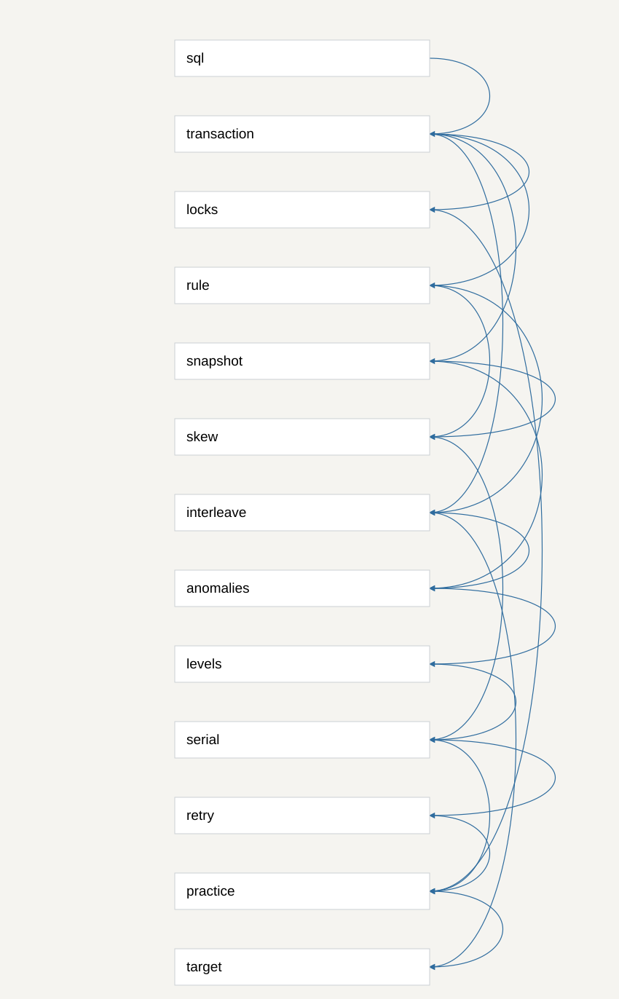

Prerequisite graph
A → B means understanding B requires A. This is an explanation graph, not the database conflict graph.

Questions and answers
What does the reader already know?
Basic SELECT and UPDATE syntax.
What is a transaction?
A transaction groups database statements into one commit-or-rollback unit; atomicity does not by itself prevent concurrent decision conflicts.
How can individually correct operations become incorrect together?
Transactions overlap when their steps interleave. A previously read value can become stale before a dependent write.
What values can an operation see while another transaction is changing data?
A snapshot chooses visible committed row versions. MVCC lets reads use older versions while updates proceed.
What different kinds of concurrent errors matter?
Dirty reads use uncommitted data; nonrepeatable reads change observed values; phantoms change result membership. Lost updates and write skew expose additional decision failures.
What guarantees do isolation levels provide?
The four levels exclude progressively stronger classes of outcomes, with vendor-specific stronger guarantees possible.
What does serializable mean and how can a database enforce it?
Serializable requires equivalence to some serial ordering of all successfully committed transactions; concurrent execution is still possible.
How should a programmer choose isolation and handle conflicts?
Protect the read-to-write dependency using a suitable atomic conditional statement, locking protocol, or Serializable transactions with whole-operation retries.
Why can correct operations conflict and how does isolation help?
Individually correct operations can make decisions using shared data that another operation changes; isolation limits observations and successful joint outcomes.
What makes an outcome incorrect?
An invariant is a stated rule that must hold; storing legal values is insufficient to preserve every application rule.
Why can a stable snapshot still violate a multirow rule?
Two transactions can read the same initial rows and modify different rows; both local decisions pass while their joint result violates the rule.
How does locking change concurrent progress?
A conflicting updater waits for a held row lock; locks on selected rows do not automatically protect absent rows or every multirow condition.
What must happen after a serialization failure?
Start the complete transaction again, including application decisions and values; retrying only the previous UPDATE retains stale reasoning.
Dependency reasons
- sql → transaction: Transactions group familiar SQL statements.
- transaction → interleave: Need transaction boundaries to distinguish within-operation reasoning from concurrent execution.
- transaction → snapshot: Need committed and incomplete transactions to explain visibility.
- interleave → anomalies: Anomalies classify the ways interleavings violate expectations.
- snapshot → anomalies: Visibility explains dirty, nonrepeatable, and phantom reads.
- anomalies → levels: Level guarantees are meaningful only once the prevented outcomes are understood.
- serial → practice: Choosing guarantees and retry behavior requires understanding serial equivalence.
- practice → target: Practical consequence completes the requested explanation.
- interleave → target: The target explicitly asks why overlap creates wrong outcomes.
- transaction → rule: Must define the unit of changes whose correctness is assessed.
- rule → interleave: Need a rule to distinguish an invalid joint result from merely a different result.
- snapshot → skew: Stable visibility explains how both transactions retain the initial premise.
- rule → skew: A multirow invariant defines why the two locally allowed changes are invalid together.
- skew → serial: The counterexample shows why stable reads are weaker than serial equivalence.
- levels → serial: Compare named level guarantees before establishing the strongest level.
- transaction → locks: Lock lifetime follows transaction lifetime.
- locks → practice: A correct explicit-lock strategy requires understanding conflict scope.
- serial → retry: Serialization rejection requires a fresh decision.
- retry → practice: A usable isolation strategy includes transaction restart behavior.
Validation: 13 unique nodes, valid endpoints, acyclic, every node reaches target.